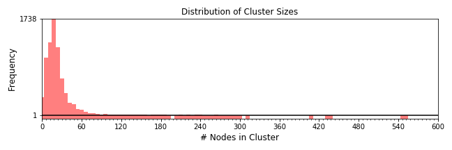
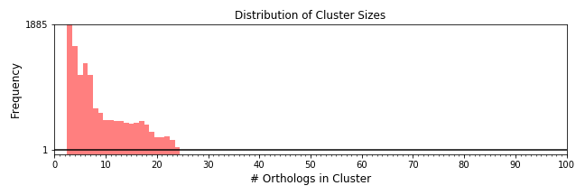
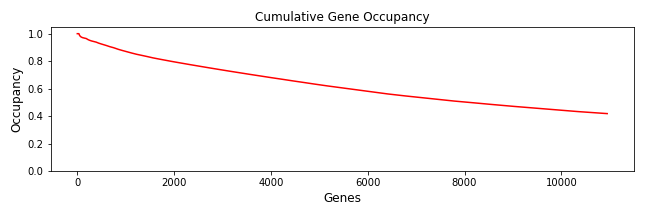
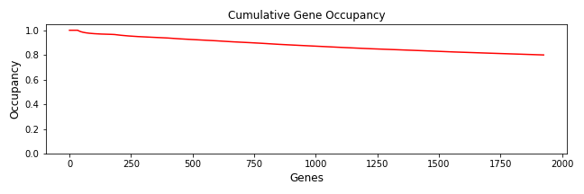

id assembly_phylogeny_expression_Hawaiian_Drosophila_June2021
|
Run 50 homologize 2021-06-15T01:34:48.030796 holy7c18609.rc.fas.harvard.edu |
Wall Time (s) : 17099.46 User Time (s) : 400590.01 System Time (s) : 470.74 Max Memory (KB) : 954,576 |
|
|
Run 51 multalign 2021-06-15T06:19:55.671542 holy7c18609.rc.fas.harvard.edu |
Wall Time (s) : 130911.35 User Time (s) : 785239.28 System Time (s) : 104235.70 Max Memory (KB) : 155,185,512 |
|
|
Run 52 genetree 2021-06-16T18:42:10.897741 holy7c18609.rc.fas.harvard.edu |
Wall Time (s) : 1440.54 User Time (s) : 33116.33 System Time (s) : 70.05 Max Memory (KB) : 474,676 |
|
|
Run 53 treeinform 2021-06-16T19:06:27.315845 holy7c18609.rc.fas.harvard.edu |
|
Wall Time (s) : 55.66 User Time (s) : 28.40 System Time (s) : 1.17 Max Memory (KB) : 675,184 |
|
Run 54 homologize 2021-06-16T19:26:56.029560 holy7c18609.rc.fas.harvard.edu |
Wall Time (s) : 16827.28 User Time (s) : 394961.58 System Time (s) : 475.33 Max Memory (KB) : 949,840 |
|
|
Run 55 multalign 2021-06-17T00:07:32.028903 holy7c18609.rc.fas.harvard.edu |
Wall Time (s) : 130547.18 User Time (s) : 780635.62 System Time (s) : 103616.90 Max Memory (KB) : 155,193,412 |
|
|
Run 56 genetree 2021-06-18T12:23:27.777957 holy7c18609.rc.fas.harvard.edu |
Wall Time (s) : 1385.47 User Time (s) : 32359.69 System Time (s) : 90.52 Max Memory (KB) : 471,452 |
|
|
Run 57 treeprune 2021-06-18T12:46:43.222883 holy7c18609.rc.fas.harvard.edu |
Wall Time (s) : 198.93 User Time (s) : 194.57 System Time (s) : 4.28 Max Memory (KB) : 6,009,608 |
|
|
Run 58 multalign 2021-06-19T00:37:00.228364 holy7c18608.rc.fas.harvard.edu |
Wall Time (s) : 47802.12 User Time (s) : 131067.44 System Time (s) : 65039.73 Max Memory (KB) : 53,601,988 |
|
|
Run 59 supermatrix 2021-06-19T13:53:57.410041 holy7c18608.rc.fas.harvard.edu |
Wall Time (s) : 24.87 User Time (s) : 21.30 System Time (s) : 3.31 Max Memory (KB) : 2,048,832 |
|
|
Run 60 supermatrix 2021-06-19T20:13:29.171250 holy7c26601.rc.fas.harvard.edu |
Wall Time (s) : 26.07 User Time (s) : 21.07 System Time (s) : 2.58 Max Memory (KB) : 927,252 |
Identifies homologous sequences across datasets. Takes assembly or group of assemblies and prepares a set of comprehensive comparisons between them. First an all by all BLAST is run with a stringent threshold, and the hits which match above a given score are used as edges between two transcripts which then form a graph. This graph is the basis of a series of comparative scores.
Total sequences: 217918
Summary of all species processed.
Distribution of the number of nodes in each cluster.
| Wall Time (s) | User Time (s) | System Time (s) | Max Memory (KB) | 17080.43 [sum] | 400544.65 [sum] | 468.27 [sum] | 472,692 [max] |
|---|
| Command | Stage | Wall Time (s) | User Time (s) | System Time (s) | Max Memory (KB) |
|---|---|---|---|---|---|
| makeblastdb | prepare_blast | 62.61 | 17.73 | 15.15 | 395,916 |
| parallel | run_blast | 16962.73 | 400474.25 | 235.03 | 396,160 |
| mcxload | parse_edges | 35.08 | 10.55 | 0.42 | 396,340 |
| mcl | mcl_cluster | 20.01 | 42.13 | 217.67 | 472,692 |
Applies sampling and length filters to each cluster of homologous sequences.
Creates multiple sequence alignments for each cluster of homologous sequences using MAFFT using the E-INS-i algorithm; see doi: 10.1093/molbev/mst010.
Cleans up alignments using Gblocks.
| Wall Time (s) | User Time (s) | System Time (s) | Max Memory (KB) | 130802.21 [sum] | 785190.21 [sum] | 104228.53 [sum] | 154,542,264 [max] |
|---|
| Command | Stage | Wall Time (s) | User Time (s) | System Time (s) | Max Memory (KB) |
|---|---|---|---|---|---|
| parallel | align_sequences | 130765.07 | 785016.93 | 104170.81 | 154,542,264 |
| parallel | cleanup_alignments | 37.14 | 173.28 | 57.71 | 636,172 |
Builds gene trees for each alignment of homologous sequences, it builds a phylogenetic tree using the maximum likelihood optimality criterion as implemented in RAxML (see http://www.exelixis-lab.org/ and doi:10.1093/bioinformatics/btl446).
Use --previous for a specific set of alignments, otherwise this pipeline will search for the output from the most recent run of multalign for the given catalog ID.
| Wall Time (s) | User Time (s) | System Time (s) | Max Memory (KB) | 1401.23 [sum] | 33112.19 [sum] | 65.72 [sum] | 226,768 [max] |
|---|
| Command | Stage | Wall Time (s) | User Time (s) | System Time (s) | Max Memory (KB) |
|---|---|---|---|---|---|
| parallel | genetrees | 1401.23 | 33112.19 | 65.72 | 226,768 |
Identifies homologous sequences across datasets. Takes assembly or group of assemblies and prepares a set of comprehensive comparisons between them. First an all by all BLAST is run with a stringent threshold, and the hits which match above a given score are used as edges between two transcripts which then form a graph. This graph is the basis of a series of comparative scores.
Total sequences: 215090
Summary of all species processed.
Distribution of the number of nodes in each cluster.
| Wall Time (s) | User Time (s) | System Time (s) | Max Memory (KB) | 16786.07 [sum] | 394915.20 [sum] | 472.93 [sum] | 467,956 [max] |
|---|
| Command | Stage | Wall Time (s) | User Time (s) | System Time (s) | Max Memory (KB) |
|---|---|---|---|---|---|
| makeblastdb | prepare_blast | 58.68 | 15.74 | 13.76 | 395,316 |
| parallel | run_blast | 16673.96 | 394847.98 | 241.72 | 395,564 |
| mcxload | parse_edges | 34.24 | 10.29 | 0.40 | 395,744 |
| mcl | mcl_cluster | 19.20 | 41.19 | 217.06 | 467,956 |
Applies sampling and length filters to each cluster of homologous sequences.
Creates multiple sequence alignments for each cluster of homologous sequences using MAFFT using the E-INS-i algorithm; see doi: 10.1093/molbev/mst010.
Cleans up alignments using Gblocks.
| Wall Time (s) | User Time (s) | System Time (s) | Max Memory (KB) | 130368.67 [sum] | 780583.00 [sum] | 103607.64 [sum] | 154,547,052 [max] |
|---|
| Command | Stage | Wall Time (s) | User Time (s) | System Time (s) | Max Memory (KB) |
|---|---|---|---|---|---|
| parallel | align_sequences | 130334.75 | 780415.79 | 103551.47 | 154,547,052 |
| parallel | cleanup_alignments | 33.92 | 167.20 | 56.17 | 631,616 |
Builds gene trees for each alignment of homologous sequences, it builds a phylogenetic tree using the maximum likelihood optimality criterion as implemented in RAxML (see http://www.exelixis-lab.org/ and doi:10.1093/bioinformatics/btl446).
Use --previous for a specific set of alignments, otherwise this pipeline will search for the output from the most recent run of multalign for the given catalog ID.
| Wall Time (s) | User Time (s) | System Time (s) | Max Memory (KB) | 1371.36 [sum] | 32356.59 [sum] | 86.75 [sum] | 225,108 [max] |
|---|
| Command | Stage | Wall Time (s) | User Time (s) | System Time (s) | Max Memory (KB) |
|---|---|---|---|---|---|
| parallel | genetrees | 1371.36 | 32356.59 | 86.75 | 225,108 |
For each gene tree generated in genetree, prune the tree to include only one representative sequence per taxon when sequences form a monophyletic group (here called 'monophyly masking'). Then prune the monophyly-masked tree into maximally inclusive subtrees with no more than one sequence per taxon (here called 'paralogy pruning').
Use --previous for a specific set of trees, otherwise this pipeline will search for the output from the most recent run of genetree for the given catalog ID.
Distribution of the number of orthologs in each gene cluster.
| Threshold | # Clusters | % Missing Genes |
| 3 | 12934 | 62.5% |
| 4 | 11049 | 58.2% |
| 5 | 9492 | 54.1% |
| 6 | 8370 | 50.7% |
| 7 | 7065 | 46.2% |
| 8 | 5948 | 41.6% |
| 9 | 5323 | 38.7% |
| 10 | 4770 | 35.9% |
| 11 | 4324 | 33.6% |
| 12 | 3885 | 31.2% |
| 13 | 3450 | 28.9% |
| 14 | 3026 | 26.5% |
| 15 | 2617 | 24.1% |
| 16 | 2226 | 21.8% |
| 17 | 1821 | 19.2% |
| 18 | 1397 | 16.2% |
| 19 | 1024 | 13.0% |
| 20 | 760 | 10.3% |
| 21 | 569 | 8.1% |
| 22 | 382 | 6.0% |
| 23 | 181 | 3.4% |
| 24 | 34 | 0.0% |
Applies sampling and length filters to each cluster of homologous sequences.
Creates multiple sequence alignments for each cluster of homologous sequences using MAFFT using the E-INS-i algorithm; see doi: 10.1093/molbev/mst010.
Cleans up alignments using Gblocks.
| Wall Time (s) | User Time (s) | System Time (s) | Max Memory (KB) | 47720.99 [sum] | 131016.28 [sum] | 65030.37 [sum] | 53,070,036 [max] |
|---|
| Command | Stage | Wall Time (s) | User Time (s) | System Time (s) | Max Memory (KB) |
|---|---|---|---|---|---|
| parallel | align_sequences | 47683.88 | 130845.83 | 64930.54 | 53,070,036 |
| parallel | cleanup_alignments | 37.11 | 170.45 | 99.83 | 508,788 |
Concatenates alignments of orhologous sequences to create a supermatrix. It also creates a supermatrix with a given proportion of gene occupancy.
| Sequence type | nt |
| Target gene occupancy | 0.0% |
| Actual gene occupancy | 41.9% |
| Number of genes | 10,949 |
| Number of columns | 12,758,237 |
Image of the gene occupancy in the supermatrix, ordered by most complete taxa, then most complete gene. Black indicates the gene is present, white that it is absent.
Plot of gene occupancies for cumulatively larger subsets of genes in the supermatrix, ordered by most complete gene.
| Species | Number of genes | Percent |
| Drosophila_virilis | 6850 | 62.6% |
| Drosophila_mojavensis | 6813 | 62.2% |
| Drosophila_willistoni | 6751 | 61.7% |
| Drosophila_melanogaster | 6664 | 60.9% |
| Drosophila_ananassae | 6662 | 60.8% |
| Drosophila_pseudoobscura | 6647 | 60.7% |
| Drosophila_grimshawi | 6501 | 59.4% |
| Drosophila_nanella | 5349 | 48.9% |
| Drosophila_cfdives | 5318 | 48.6% |
| Scaptomyza_cyrtandrae | 4975 | 45.4% |
| Scaptomyza_varipicta | 4838 | 44.2% |
| Scaptomyza_varia | 4764 | 43.5% |
| Drosophila_macrothrix | 4550 | 41.6% |
| Drosophila_mimica | 4543 | 41.5% |
| Drosophila_atroscutellata | 4385 | 40.0% |
| Drosophila_primaeva | 3966 | 36.2% |
| Drosophila_tanythrix | 3921 | 35.8% |
| Drosophila_sproati | 3456 | 31.6% |
| Drosophila_picticornis | 3115 | 28.5% |
| Scaptomyza_hsui | 2299 | 21.0% |
| Scaptomyza_graminum | 2252 | 20.6% |
| Scaptomyza_montana | 2241 | 20.5% |
| Drosophila_murphyi | 2228 | 20.3% |
| Scaptomyza_pallida | 963 | 8.8% |
Back to TOCNumber and percent of genes per taxon in supermatrix.
Concatenates alignments of orhologous sequences to create a supermatrix. It also creates a supermatrix with a given proportion of gene occupancy.
| Sequence type | nt |
| Target gene occupancy | 80.0% |
| Actual gene occupancy | 80.0% |
| Number of genes | 1,926 |
| Number of columns | 1,943,000 |
Image of the gene occupancy in the supermatrix, ordered by most complete taxa, then most complete gene. Black indicates the gene is present, white that it is absent.
Plot of gene occupancies for cumulatively larger subsets of genes in the supermatrix, ordered by most complete gene.
| Species | Number of genes | Percent |
| Drosophila_virilis | 1901 | 98.7% |
| Drosophila_mojavensis | 1906 | 99.0% |
| Drosophila_willistoni | 1898 | 98.5% |
| Drosophila_melanogaster | 1895 | 98.4% |
| Drosophila_ananassae | 1892 | 98.2% |
| Drosophila_pseudoobscura | 1877 | 97.5% |
| Drosophila_grimshawi | 1825 | 94.8% |
| Drosophila_nanella | 1717 | 89.1% |
| Drosophila_cfdives | 1686 | 87.5% |
| Scaptomyza_cyrtandrae | 1769 | 91.8% |
| Scaptomyza_varipicta | 1709 | 88.7% |
| Scaptomyza_varia | 1761 | 91.4% |
| Drosophila_macrothrix | 1587 | 82.4% |
| Drosophila_mimica | 1595 | 82.8% |
| Drosophila_atroscutellata | 1559 | 80.9% |
| Drosophila_primaeva | 1346 | 69.9% |
| Drosophila_tanythrix | 1450 | 75.3% |
| Drosophila_sproati | 1352 | 70.2% |
| Drosophila_picticornis | 1140 | 59.2% |
| Scaptomyza_hsui | 1169 | 60.7% |
| Scaptomyza_graminum | 1169 | 60.7% |
| Scaptomyza_montana | 1167 | 60.6% |
| Drosophila_murphyi | 1102 | 57.2% |
| Scaptomyza_pallida | 510 | 26.5% |
Back to TOCNumber and percent of genes per taxon in supermatrix.